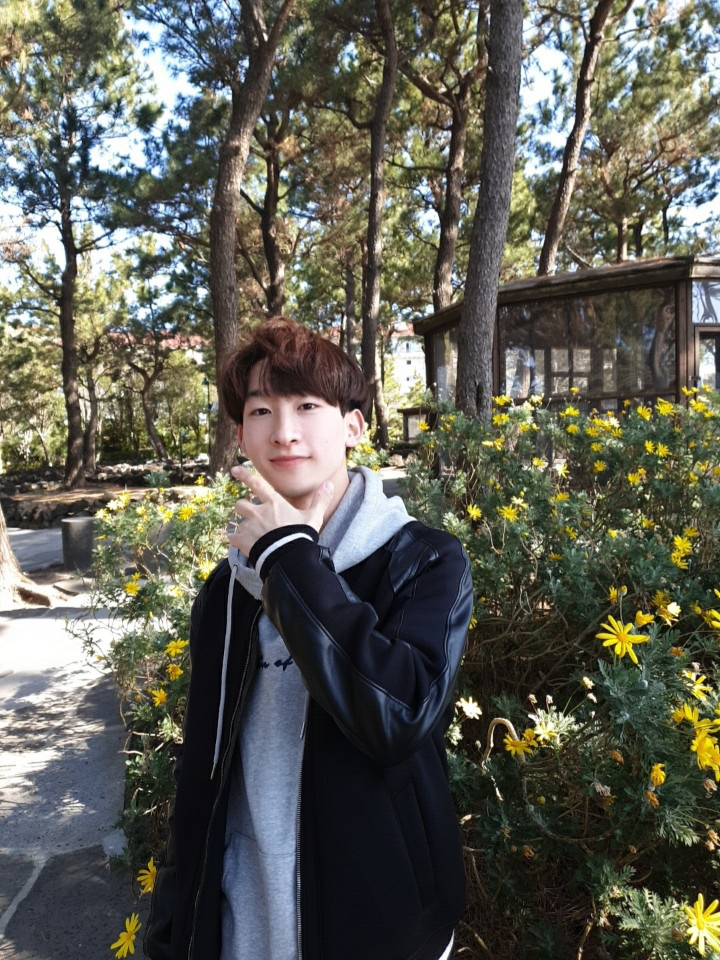
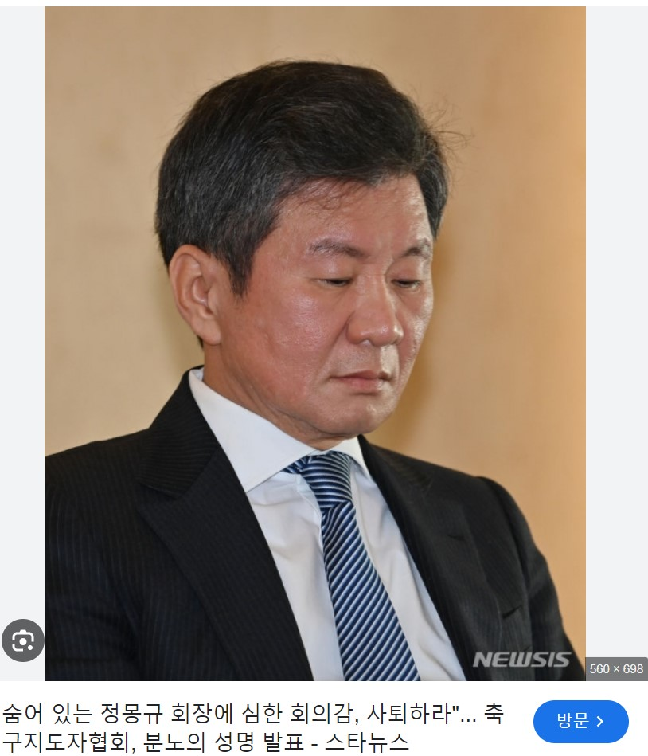
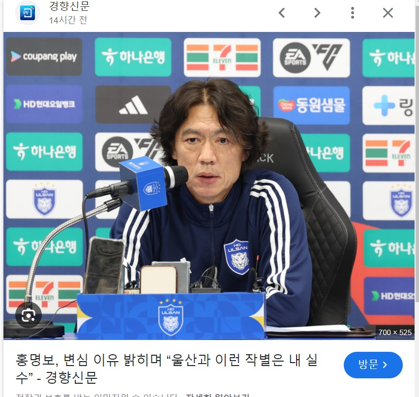
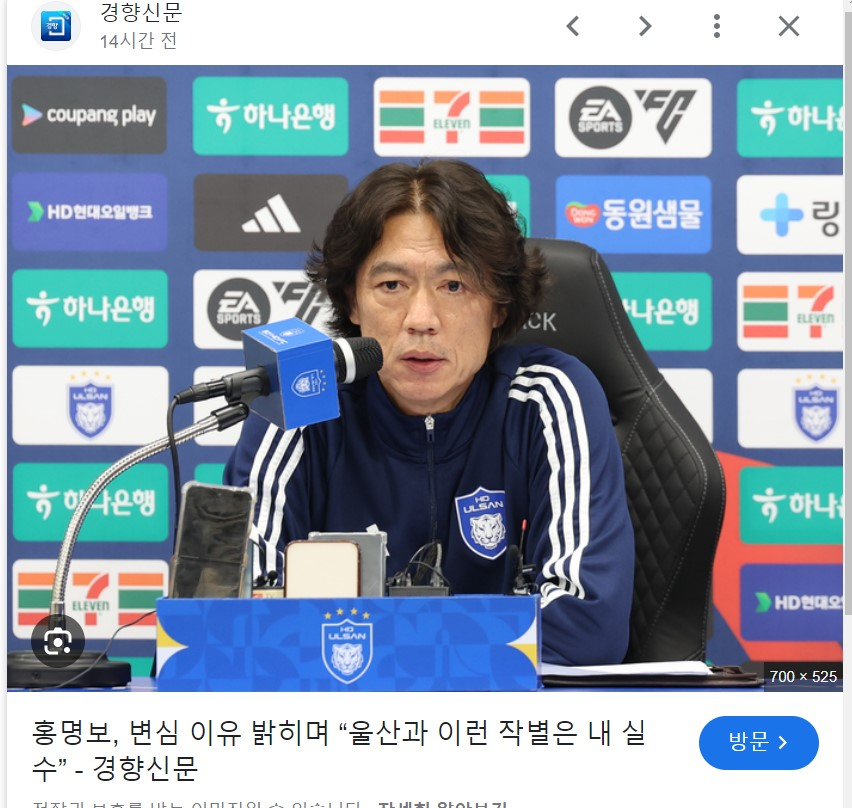

David Park
University Student studying
computer science

Hello My English name is David and I am a student studying computer engineering
at Kangwon National University.
Originally, my major was not computer engineering,
but Journalism and Information Science. But for my bright future and
reflecting the
degree of interest in the subject, now I am currently studying computer engineering.
The reason why I made this homepage is because I want many people notify me and
at the same time
I wanted to let the world know who I am is.
Also, I will periodically update the homepage and share my daily life what I am doing and studying.
The big problem of our Korea Football Association(KFA)
There are a number of serious problems in the KFA.
The case of amnesty and reversal of match-fixing soccer players of the KFA in 2023,
the case of not renewing the contract with Bento, who led the team to the round of 16 at the 2022 World Cup in Qatar, and the case where Chairman
Chung Mong-gyu arbitrarily appointed Klinsmann
while ignoring both the process and process.


(Chairman Chung Mong-gyu)
(Klinsmann coach, who was appointed arbitrarily by Chung Mong-gyu)
Also, the old-fashioned way of thinking that football is theirs, not everyone's,
that you don't know much about soccer because you're still young (to Park Joo-ho, who was coached by Bayern Munich's Tuchel),
and the case where Korean national team players worked out together at a hotel with guest because they couldn't find a suitable training ground to easily get early soccer before the resumption of the 2024 Asian Cup.


(“I am feeling very skeptical about Chairman Chung Mong-gyu, who is in hiding. He must resign!”
Football Coaches Association issues an angry statement. -Star News-)
(“Is the Football Association Chung Mong-gyu’s private property?Resign!!” -Yang Moon-seok-)
Furthermore, the fact that the 22nd FIFA ranked South Korean coach left the vacancy for five months,
and he constantly changed and changed what he said about the appointment of the coach for five months, mocking the people.
KFA also missed out on world-class coaches such as Jessi Machi, Renard, Senol Guinesh, Casas, Gus Foyet and David Wagner,
filling out the two spots as interim coaches due to their incompetence,lack of bargaining power and lack of communication.
After all, there was a case in which Hong Myung-bo, a far less capable coach than them, was appointed without an interview.
There are far more problems than this.
 

([Official] Jesse March, 'No. 1 candidate for Korean coach', appointed as head coach of the Canadian national team.. KFA negotiations canceled. -Spoky-)
(Hong Myung-bo, who initially said he would not leave Ulsan,revealed the reason for his change of mind and said,
"It was my mistake to say goodbye to Ulsan like this." - Kyunghyang newspaper -)
Within the Korea Football Association, regardless of what the people keep talking about, they had already appointed Hong Myung-bo as the domestic coach,
and if this was the case, why did they say they would appoint a foreign coach for five months, and shouldn't they have picked a domestic coach earlier?


(Jesse March, who KFA initially said he didn't know about, went to Canada due to a breakdown in negotiations with Korea, and was successful. -FT Sports-)
(Canada, ‘The Myth of the Big Four’ by Jesse March. Defeat Venezuela and take victory in first appearance in Copa America - Goal.com-)


(Messi VS Jesse Marsh..)
(Jessie Machi, a potential Korean coach, could not narrow the gap with the Korea Football Association...negotiations failed. -Insight-)
After five months of waiting and enduring with a lot of world-renowned masters, raising the eyes and expectations of soccer fans,
the coach finally appointed was Ulsan Hyundai's Hong Myung-bo in the K League.
It has two problems.
1. "K-League can be sacrificed for the national team." This is what KFA has.
What would happen if we suddenly appoint a Premier League manager as England's coach, especially in the middle of the season?
There will be strong backlash from fans and they will never be able to do so.
They don't even think about how Ulsan Hyundai fans feel,
and they just say "I'm sorry" and "I'm sorry", and they have a ridiculous problem of stealing a K-League manager as a national team coach
in the middle of the season can be justify. They are not respecting K-League and also K-League fans.


(KFA Jeong Hae-seong)
(Chairman Jeong Hae-seong, what if you bring in a domestic professional coach during the season?
Communicate sufficiently with the club and be courteous to fans...haha)

(Jung Hae-seong said, “I will take responsibility.” So what were you responsible for??)
2. Director "Gus Foyet", "David Wagner", and "Hong Myung-bo", who made it to the final nominations.
Coach Gus Foyet and David Wagner were very active in our country's coach, and I understand that they were very eager, preparing
50 presetations in an interview with Lee Im-saeng, chairman of the Power Reinforcement Committee.
They already knew and were passionate about Korean players, and they were expected to take the lead in contributing to the development of Korean players by observing the K-League well..

(KFA Lee Im-saeng, chairman of the Power Reinforcement Committee)
Then suddenly why Hong Myung-bo? Director Lee Im-saeng admitted that he didn't even have an interview.
Rather, director Lee Im-saeng asked Hong to please direct the Korean national team, which proceeded immediately after he returned to Korea from Europe.
And he finally appointed Hong Myung-bo, who both Foye and Wagner reportedly learned from the news that they had fallen.

(Director Hong Myung-bo and Director Lee Im-saeng admit to 'omitting interviews'. “Please ask instead of an interview. There can be no internal appointments.” )
He thus failed to show courtesy and attitude toward the coaches.
Foye and Wagner expressed displeasure with the incompetence and disrespect of the Korean Football Association.
So to all the foreign coaches who were nominated for the Korean coach as Korean soccer fans, I wrote an apology and sent it to Dm on Instagram.
I hope the foreign coaches read my apology and relieve any unpleasant feelings.

(For the development of soccer in our country, I would like you, as the president of the Korea Football Association, to communicate and take responsibility for soccer fans.)


This is a photo of an apology letter sent to Director Renard, Director Jesse March, Director Wagner, Director Poyet, and Director Gunes in that order.


대한축구협회(KFA)의 많은 문제들
대한축구협회에는 여러 가지 심각한 문제들이 많습니다. 2023년 대한축구협회 승부조작 축구인 사면 및 번복 사건,
2022년 카타르 월드컵에서 16강으로 이끈 벤투 감독과 재계약하지 않은 사건,
과정과 프로세스를 모두 무시한 채 회장인 정몽규가 독단적으로 클린스만을 선임한 사건 등 너무나 많습니다.
또한 축구가 모든 사람의 것이 아니라 자신의 것이라고 생각하는 구사고방식,
너는 아직 어려서 축구를 잘 모른다(바이에른 뮌헨 투헬 감독에게 배웠던 박주호에게),
2024년 아시안컵 재개를 앞두고 한국 대표팀 선수들이 조기 축구도 쉽게 할 수 있는 적절한 훈련장을 찾지 못해 투숙객들과 함께 호텔 헬스장에서 함께 운동한 사례도 있습니다.
게다가 FIFA랭킹 22위의 한국을 감독없이 5개월간 공석으로 남겼다는 사실도,
그리고 5개월 동안 감독 선임에 대해 지속적으로 말을 끊임없이 바꾸며 국민들을 조롱했습니다.
KFA는 제시 마치, 르나르, 세놀 귀네슈, 카사스, 거스 포옛, 데이비드 바그너 등 세계적인 코치들도 놓쳤고
무능력, 협상력 부족, 의사소통 부족으로 인해 임시 감독 두 자리를 모두 국내 감독으로 채우게 되었습니다.
이러한 과정과 긴 시간 끝에 결국 그들보다 실력이 훨씬 떨어지는 홍명보 감독을 면접 없이 선임하게 되었습니다.
최근 들어 대한축구협회 내부에서는 축구팬들이 아무리 떠들고 어떤 말을 하여도 이미 홍명보 감독을 감독으로 내정하고 있었습니다.
그렇다면 도대체 왜 축구협회는 5개월 동안 외국인 코치를 임명하겠다고 했고, 이렇게 될거였으면 국내 감독을 더 일찍 뽑지 않았을까요?
수많은 세계적 명장들의 선임 소식과 함께 5개월간 기다림과 인내 끝에 축구팬들의 눈과 기대를 한껏 끌어올렸지만,
최종적으로 부임한 코치는 K리그 울산 현대의 홍명보였습니다.
이것은 2가지 문제점이 있습니다.
1. "K리그는 국가대표팀을 위해 희생할 수 있다." 이것이 바로 KFA가 가지고 있는 생각입니다.
만약 시즌 중반에 갑자기 프리미어리그 감독을 잉글랜드 감독으로 임명한다면 어떻게 될까요?
팬들의 반발이 엄청 거셀 것이고 결코 그렇게 할 수 없을 것입니다.
하지만 우리나라 k리그는 다릅니다.울산 현대 팬들의 심정은 생각도 안 하고,
"미안하다", "미안하다"고만 하면서 정당화하고 있고, 국가대표팀 코치로서 K리그 감독을 훔쳐가는 어처구니 없는 문제를 또 한번 일으키고 있습니다.
그들은 K리그는 물론 K리그 팬들도 존중하지 않습니다.
(사퇴하면 다야? 어떻게 책임질건데?))
2. 최종 후보에 오른 '거스 포옛', '데이비드 바그너', '홍명보' 감독님.
거스 포옛 감독과 데이비드 바그너 감독님은 우리나라 감독으로의 활동이 매우 적극적이셨고, 모두 매우 열정적으로 준비하고 계셨던 것으로 알고 있습니다.
이임생 전력강화위원장과의 인터뷰에서 50가지 ppt를 보여주면서 발표를 진행했다고 합니다.
그들은 이미 한국 선수들에 대해 잘 알고 있었고, 열정을 갖고 있었고, K리그를 잘 관찰해 한국 선수들의 발전에 앞장설 것으로 기대됐습니다.
그런데 갑자기 홍명보는 왜? 이임생 감독은 홍명보 감독 인터뷰조차 하지 않았다고 인정했습니다.
오히려 이임생 감독은 유럽에서 귀국하자마자 홍명보 감독의 집 앞에 찾아가 한국 대표팀의 지휘를 부탁했습니다.
그리고 결국 홍명보를 임명했고, 포옛과 바그너 감독은 뉴스를 통해서 자기들이 탈락했다는 사실을 들었다고 합니다.
그는 두 명의 감독들에게 아쉽게 탈락하게 된 이유는 물론 예의와 태도도 갖추지 않았습니다.
포옛과 바그너 감독은 불쾌감을 표출했고 대한축구협회의 존중없는 태도에 불편한 기색을 내비쳤었습니다.
그래서 그동안 모든 것들을 통틀어서 한국 축구팬으로서 한국 감독 후보로 지명된 모든 외국인 감독님들에게 제가 직접 사과문을 써서 인스타그램 DM으로 보냈습니다.
부디 외국인 감독님들께서 제 사과문을 읽어주시고 불편한 감정이 해소되셨으면 좋겠습니다.
제발 우리나라의 축구 발전을 위해서, 축구협회의 회장으로서 축구팬들과 소통하고 책임감을 갖는 모습을 보이셨으면 좋겠습니다.
맨날 뒤에서 숨지만 마시고요.


이거는 제가 르나르 감독님, 제시 마치 감독님, 바그너 감독님, 포옛 감독님, 귀네슈 감독님에게 직접 작성하여 보낸 사과문의 전문입니다. 인스타그램으로 보낸 dm 사진은
영어 버전 마지막에 있습니다.
About my precious person in the world.
In this section. I will introduce about my girlfriend for 5 years in love. I really think important
making friends, but after making friends it is not finish. Also it's very important to keep the relationship smooth.
So in the same context I want to introduce about my best precious person in my life and tell you about how did I
kept the relationship smooth with my girlfriend.
In addition, I really love having a trip. I would like to tell you about our story traveling that were really happy and enjoyful.
In this section I will talk about
Travel place in Korea Busan!!

August 9, 2021, we started our trip to Busan!! Planned to have a fun 3-day trip. Taken on the train.

Day 1, we bought many things at Jagalchi Market and felt great thanks to the kind store owners. Busan's hospitality is the best! Taken at Jagalchi Market.

Taken in front of a mango cafe on our way to Haeundae. The mango drink was so refreshing and delicious as it was very hot that day.
The mascot of Haeundae, a must-visit spot!

Taken in front of the mascot at Haeundae Beach.
After taking photos at the mascot, we had lunch at 'Sookseongdo', a famous restaurant for black pork, in front of the beach.
Enjoying sashimi at the beach, because a trip to the beach isn't complete without it!
Spicy fish stew (maeuntang) enjoyed with sashimi.

Taken at Gwangalli Beach with the 'Gwangalli' sign, arranged in initials, in the background.
Enjoying the night view on a yacht at Gwangalli. It was a perfect choice to take the yacht at night.

Last day in Busan. Taken in front of Gwangalli Beach before leaving. See you again, Busan!
This trip was our 400-day anniversary trip and our third trip together. We usually traveled to places in and around Seoul, such as Gangneung, Chuncheon, Donghae, and Incheon. This was our first time visiting a distant place, Busan. Although we could only stay for 2 nights and 3 days, it was our first long-distance trip together and a very happy time with my girlfriend.
Both my girlfriend and I love traveling and always try to go on trips frequently. We hardly ever fight, and even if we do, we make up quickly. I think the reason for this is that by traveling often, we take it easy and find happiness together. We resemble each other in this way.
In the next chapter, I'll talk about our first trip together after my military discharge, which was also our first overseas trip. Please look forward to the next chapter.
Travel to Europe!
After being discharged from the military on December 7, 2023, I gave my girlfriend the traditional "flower shoes" and we went on our first overseas trip together. And it was to Europe! We traveled from January 20, 2024, to February 6, 2024, visiting Italy, the Czech Republic, and Hungary.
Now, I will introduce our European trip with photos from the journey!
Before going to Italy, I studied some Italian, haha. "Buonissimo" means "really delicious." "Buongiorno" means "good morning."
Piazza Venezia, located in Rome, Italy. It was incredibly grand and huge. I knew why it was called Piazza Venezia in Rome, but I have forgotten the reason now...
When talking about Rome, you can't miss the Colosseum. As expected, the Colosseum is immensely grand and boasts a rich history.
Along with the Colosseum, the Pantheon is also a must-see. It was so crowded that there was hardly any space to step.

A photo taken between the columns when coming out of the Pantheon. It’s one of my favorite photos.
When you think of Italy, you can't leave out risotto. The risotto we had locally was a taste of heaven.

Now we moved from Rome to Florence and visited the Duomo.

Florence is also famous for its T-bone steak. We tried it once, and it was reasonably priced and very delicious. Highly recommended!
We climbed to the top of the Duomo with my girlfriend, and it wasn't that high. You could see the entire view of Florence, and it was so refreshing and nice.
We took a photo together!
Personally, this was the best and most delicious restaurant of the trip. The restaurant is called "Zaza," and it’s incredibly delicious. Just looking at the photo makes you think it must taste amazing, right?
We also rode the carousel in the square.
Next, we moved on to Venice.
We took a boat in Venice, and it was so refreshing that I wanted to jump into the water. I held back because it was winter.
After Italy, we moved on to the Czech Republic! You've probably heard of Prague. Prague is the capital of the Czech Republic!
An enigmatic cathedral located in Prague. I heard it’s the most recently built cathedral in Europe and the tallest and largest in Europe.
My girlfriend, hehe.
A Czech dessert snack called trdelník. It's really delicious. You can choose the sauce to go inside the bread with ice cream on top. I chose chocolate, almond, and pistachio ice cream.
The beautiful night view of the Czech Republic.

Finally, we moved on to Hungary.
You all know, right? When it comes to Hungary, the iconic landmark is the Parliament Building! Located in Budapest, the Parliament Building is Hungary's most famous landmark.
This trip marks both my military discharge anniversary and a celebratory journey commemorating 1300 days spent together. It's our first time venturing beyond Korea, and being able to travel to Europe was a dream come true. Sharing my inaugural European expedition with my girlfriend filled me with immense joy and happiness.
Although we couldn't visit countries like France, England, or Spain this time, I'm hopeful for our next European adventure when we'll definitely explore those places!
Feedback
Any feedback for my homepage is welcome anytime!
Ex:
$ I want your school graduated.
$ Where do you live?
$ Is there anything hard or difficult studying computer science?
you said your original major
was not computer science.
Thank you for reading my HomePage!!